新しい制作スキームの検証レポートと、現在のスキーム
初稿までの作業時間（確認待ちを除く）。弊社の旧キットで作った案件（約2時間〜2時間25分）の約2〜6割
5本とも、文言照合・CSSの散らかり6項目0件・1画面の収まりで不合格0。CSSは389〜446行で、実例4サイト（583〜7,568行）より少ない
社内の確認のまとまりで数えた修正の回数（旧キットは3回）。案件で差がある。主因は参考サイトと仕様書の読み落とし。決まりが5日で20版に増え、ほかの制作者での再現は未検証
本資料の流れ
検証した5本（2）→ スキームの完成度（3）→ 初稿の質と、初稿・提出時の比較（4〜6）→ アウトプットの完成度（7）→ ご指摘の再発防止チェックリスト（8〜9）→ 最終の門と、新しい検査での洗い直し（10〜11）→ 再現性（12）→ 良かった点・改善点（13〜14）→ 初稿をさらに速くする方法（15）→ 現在のスキーム（16〜19）→ 流出・複製への対策（20〜21）→ ほかの制作者が再現するために（22）→ 次の改善とご相談事項（23）→ 参考：数字の出典（24）。矢印キー・スペースで進みます。（？）を押すと補足が開きます。
2検証した5本の案件
| 案件 | キットの版 | 進め方 | 提出したURL（最終）・修正回数 |
|---|---|---|---|
| メタメディア様 | v1.1 | 動画＋3ページで確認 → 全10ページ・3案 | v3.metamedia-recruit.pages.dev 修正2回 |
| FUKURU様 | v1.3〜1.5 | 途中確認なし・全ページ・1案。シートの指定により、通常スクロール型＋画像の1枚目 | v1.fukuru-recruit.pages.dev 初稿修正なし |
| 鈴興建設様 | v1.9 | 途中確認なし・全ページ・1案 → のちに3案を作り、案Aを採用 | v1.suzukou-recruit.pages.dev 初稿修正なし |
| アステップ様 | v1.14 修正時 v1.15 | 途中確認なし・全ページ・1案。確認用URLで社内の修正のあと、版ごとのURLで提出 | v2.astep-recruit.pages.dev 修正1回 |
| groxi様 | v1.14 | 途中確認なし・全ページ・1案。確認用URLで社内の修正のあと、版ごとのURLで提出 | v1.groxi-recruit.pages.dev 修正対応中 |
| 比較：たくみ様 | v0.3（旧キット） | 途中確認あり・動画＋3ページ → 全ページ・3案 | v3.takumi-recruit.pages.dev 修正2回 |
検証の条件
5本とも、ヒアリングシートと参考サイトから、キットの手順どおりに制作しました。案件ごとに出た学びはキットに戻し、次の案件は新しい版で作っています（版が案件ごとに違うのはこのためです）。
比べる相手
時間は、弊社の旧キット（v0.3）で作ったたくみ様の案件と比べます。現行マニュアルの制作時間は実測が無いため時間は未計測とし、CSSの量・散らかり・不具合の記録で比べます（7画面）。
3スキームとしての完成度（速さ・修正前の品質・工数）
初稿までの作業時間（確認待ちを除く）
メタメディア様は3案まで、ほかは1案の時間です。アステップ様・groxi様は、仕様書の照合表と参考サイトの全セクションの分析を初稿の前に行う版（v1.14）で作ったため長くなったと考えています（推測を含みます）。ページ数・案の数が違うため、目安としてご覧ください。
減らせた工数
- 初稿まで：約2時間〜2時間25分 → 33〜72分（約4〜8割減）
- 社内の確認：旧キット3回 → 1〜4回（まとめて確認した場合の回数・概数）
- 文言照合・収まり・散らかりの確認：目視から道具へ（1コマンドで合否。手で確認していた時間は未計測）
| 案件 | 社内の確認 | 主な種類 | 貴社からの修正回数 |
|---|---|---|---|
| たくみ様 | 3回 | 参考サイトの読み落とし・写真の明るさ・余白・動きの速さ | 修正2回 |
| メタメディア様 | 4回 | 参考サイトの読み落とし・動きの強さ・速さ・余白 | 修正2回 |
| FUKURU様 | 1回 | 1枚目の見せ方・写真の選び方 | 初稿修正なし |
| 鈴興建設様 | 2回 | 仕様書（ヒアリングシート）の読み落とし・参考サイトの読み落とし・余白・バランス・動きの強さ | 初稿修正なし |
| アステップ様 | 1回 | 動きと賑やかさ・携帯での改行・余白・イラストの収まり | 修正1回 提出後に4点（対応中） |
| groxi様 | 2回 | 参考サイトの読み落とし（奥行き・動き・見出しの表現）・余白と行間・色の指定 | 修正対応中 |
社内の確認＝初稿を弊社の責任者が確認した「まとまり」の回数（数時間あいたら別の回。細かく分けて送った指示は1回にまとめて数えた概数）。種類は制作記録とキットの更新履歴から分類しました。
4時間をかける分、初稿の質を高くしています
FUKURU様・鈴興建設様は、初稿をそのままご提出いただきました
5本とも、ページ送り・1画面の収まり・CSSの散らかりの検査で0件にしてから提出（7画面。FUKURU様のページ送りは対象外）
最短ではなく、下の準備に時間を使っています（3画面）
初稿の前にしていること
- 参考サイトのいいとこ取り：参考サイトの全セクションを「型の表」にし、どのページにどの型を使うかの「割り当て表」を、初稿の前に作ります
- 仕様書の読み落としを防ぐ：ヒアリングシートの全セル・全補足を照合表（✓△✕）にしてから作ります
- 裏側のコードの不具合を残さない：強いスワイプでの行き過ぎ・途中から表示されるページ・はみ出し・効いていないCSSを、道具で0件にしてから出します
| 案件 | 貴社からの修正 | 貴社ディレクターのご評価（抜粋） |
|---|---|---|
| FUKURU様 | 初稿修正なし | 「流石のクオリティで修正点はない」 |
| 鈴興建設様 | 初稿修正なし | 「細かい要望まで汲み取っていただき完璧に」 |
| アステップ様 | 修正1回 | 「全体的にデザイン感は問題ない」 |
| メタメディア様 | 修正2回 | 「参考サイト踏襲されていていい感じ」 |
| groxi様 | 修正対応中 | 「全体的にデザイン感は問題ない」 |
| 比較：たくみ様 旧キット | 修正2回 | 「参考サイトも踏襲されていて、すごくいい感じ」 |
ご評価は Slack でいただいた言葉からの抜粋です。修正の中身は（？）をご覧ください。
5初稿と提出時の比較① 修正をいただいた案件（スマホ 390×844）
たくみ様 旧キット・修正2回
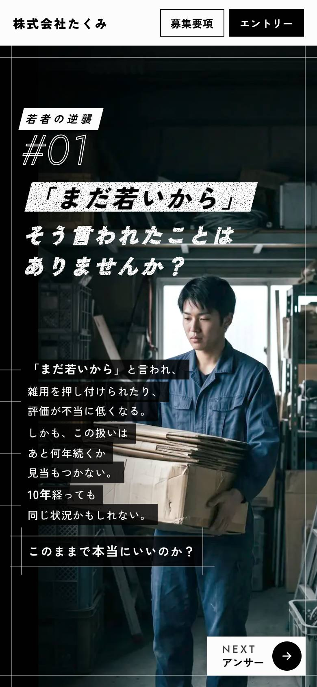
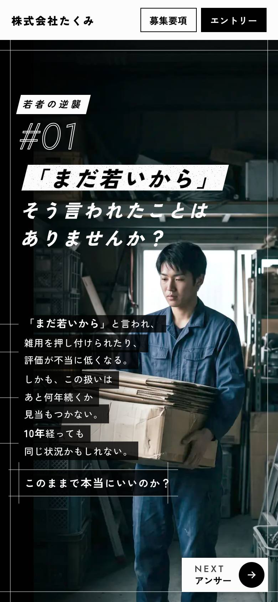
2ページ目：「若者の逆襲」の札と「#01」の間を広げました。全ページの初稿（v2）からは、ほかにフォームの補足文の削除とプルダウン化
メタメディア様 修正2回
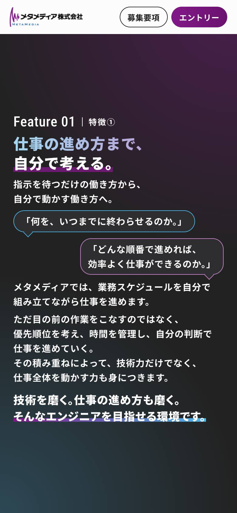
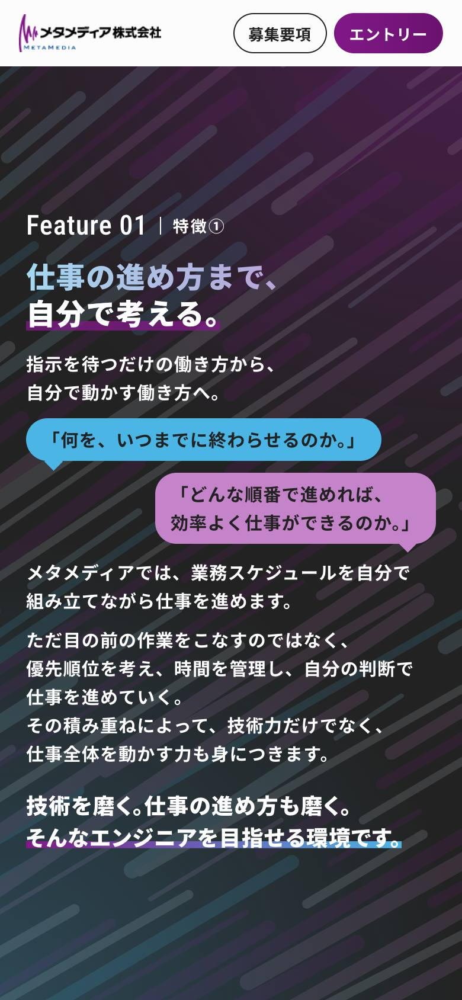
特徴①：吹き出しを枠線から塗りに。特徴①〜③の背景を黒でそろえ、1枚目の斜めのあしらいを続けました
アステップ様 修正1回
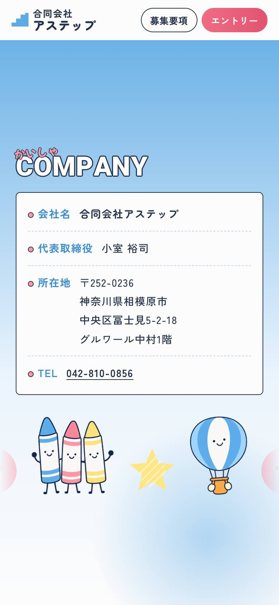
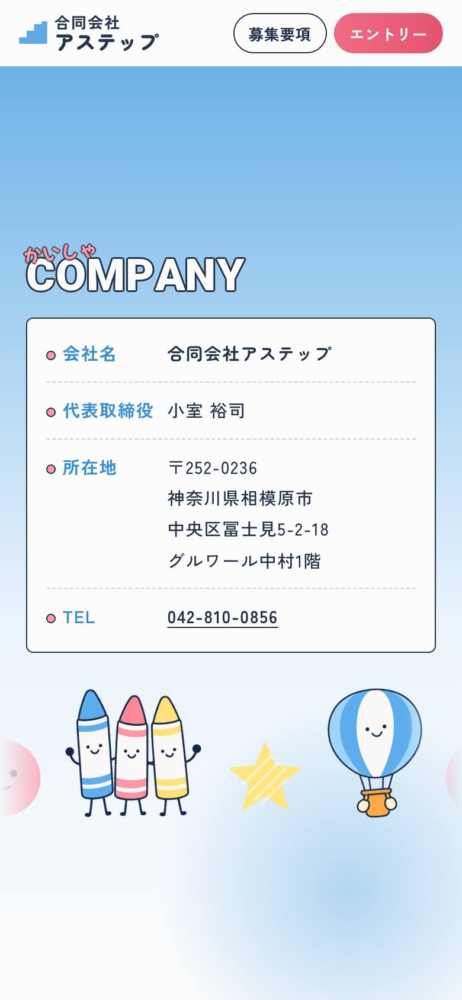
会社概要：値の左端をそろえました。初稿は、お送りした時点の控えのファイルから撮っています
6初稿と提出時の比較② 初稿のまま提出いただいた案件（スマホ 390×844）
FUKURU様 初稿修正なし
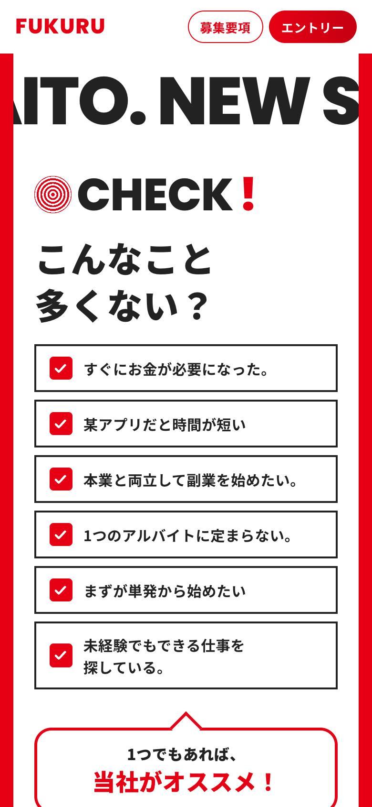
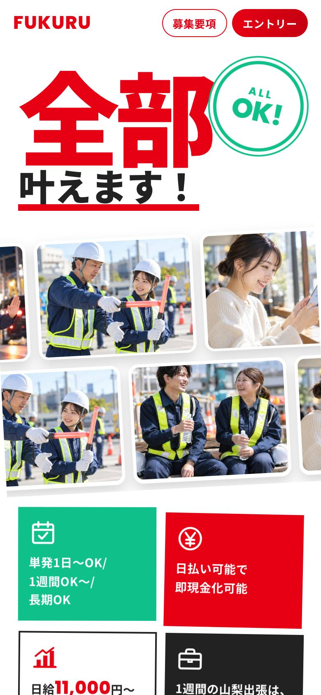
シートの指定どおり、通常スクロール型＋画像の1枚目
鈴興建設様 初稿修正なし
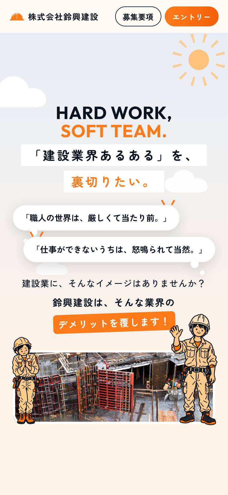
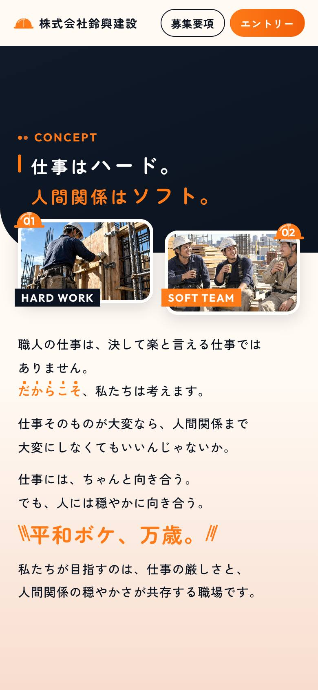
縦スワイプ型・全ページ1案
groxi様 修正対応中
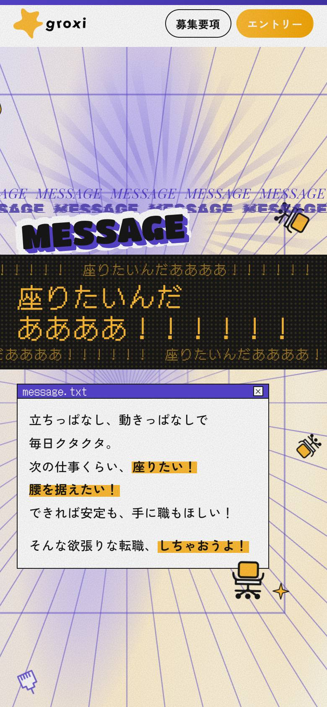
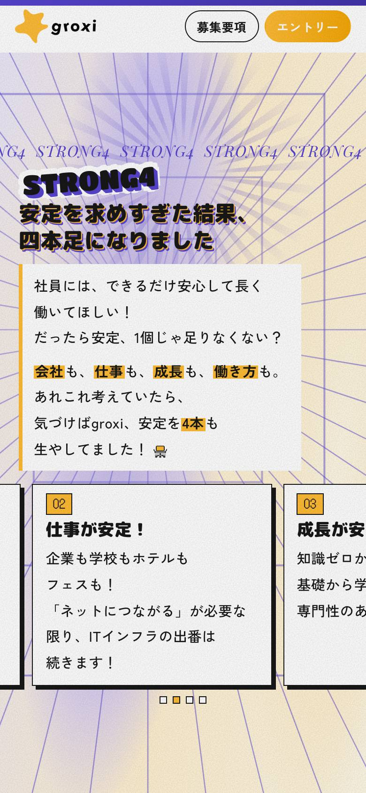
スマホで強調の文が途中で改行される点（2ページ目ほか）と、PCでカードを横に送れない点を直しています
7アウトプットとしての完成度（検査の実測と実例サイトとの比較）
| 検査 （3本は10月18日、2本は10月20日の提出時） | メタメディア様 | FUKURU様 | 鈴興建設様 | アステップ様 | groxi様 |
|---|---|---|---|---|---|
| 全検査 | 合格 | 合格 | 合格 | 合格 | 合格 |
| 文言照合（シートと一言一句） | 一致 | 一致 | 一致 | 一致 | 一致 |
| CSSの散らかり6項目 | すべて0 | すべて0 | すべて0 | すべて0 | すべて0 |
| 1画面の収まり（不合格／ページ×画面サイズ） | 0／66通り | 0／77通り | 0／70通り | 0／84通り | 0／84通り |
| 上下の余白（上＝下） | 全ページ | 対象外 | 全ページ | 全ページ | 全ページ |
| ページ送り | 合格 | 対象外 | 合格 | 合格 | 合格 |
FUKURU様は通常スクロール型のため、上下の余白とページ送りは検査の対象外です。なお、この表は v2.0 より前の検査です。アステップ様では検査がすべて合格のまま、文字とイラストの重なり・配色の見やすさ・枠からのはみ出しのご指摘をいただきました。v2.0 でこの3種類を検査に加え、5本を洗い直しました（11画面）。
| 実例4サイト （現行マニュアル） | 検証5本 | |
|---|---|---|
| CSSの行数 | 583〜7,568行 | 389〜446行 |
| 直しても画面が変わらない行 | 30〜282件 | 0件 |
| !important | 0〜15件 | 0件 |
| CSSの色の直書き | 23〜91件 | 0件 |
| スワイプの不具合の記録 | 3〜4件（3サイト） 1サイトは記録なし | ページ送りの検査に合格 iPhone実機は未確認 |
| 制作時間 | 未計測 | 33〜72分 |
実例4サイトの数字は前回のご提案（5〜8画面）で測ったものです。実例は納品までの修正を経たサイト、検証5本は初稿〜修正の途中のため、同じ条件の比較ではありません。
8修正のご依頼が出ない形を目指して（ご指摘の再発防止チェックリスト）
これまで貴社（エンドクライアント様からのご依頼を含む）からいただいたご指摘をすべて、二度と起こさないためのチェックリストにしました。キットの一部として、どの制作者も提出の前に全項目を確かめます（キット v1.18 で作成。v2.0 で4件を検査に移しました）。
INSPIRE様〜groxi様の7案件。社内の確認で出た指摘は含みません
検査が不合格にする、または土台の作りで最初から起きない
作業ルールと提出チェックに決まりがあり、提出前に人が確かめる
決まりはこれから。それまでは全ページの一覧画像で目で確かめる
| 分類 | 件数 | 道具・土台 | 手順 | 未対応 |
|---|---|---|---|---|
| レイアウト・余白 | 4 | 1 | 3 | 0 |
| 文字・改行 | 7 | 2 | 3 | 2 |
| フォーム | 2 | 1 | 1 | 0 |
| 写真・図 | 7 | 1 | 4 | 2 |
| 動き | 3 | 1 | 2 | 0 |
| PC表示 | 3 | 2 | 0 | 1 |
| シート・提出 | 3 | 0 | 3 | 0 |
| 合計 | 29 | 8 | 16 | 5 |
運用の決まり
- ご指摘をいただいたら、まずチェックリストに1行足す
- 防ぎ方は「作業ルール → 検査の道具 → 土台」の順に強くする。人の目で漏れたものは、まず道具に移せないかを考える
- 提出の前に全項目を確かめる（作業ルールの手順8・提出チェックの冒頭に明記）
正直にお伝えしたいこと
①②の番号ときっかけの補足文は、同じご指摘を2回いただいてから決まりにしました。また、アステップ様の初稿の提出後にいただいた4件（文字とイラストの重なり・配色の見やすさ・ロゴのはみ出し・語の重複）は、当時の検査がすべて合格のまま起きたものです。v2.0 でこの4件を検査に移し、修正前の版で4件とも検出できることを確かめました（10〜11画面）。
9チェックリストの全項目（29件）
| # | ご指摘（要旨） | 最初の案件 | 状態・段 |
|---|---|---|---|
| レイアウト・余白 | |||
| 1 | 会社概要などの「項目名＋値」で、値の左端がそろわない | アステップ様 10/20 | 手順 B |
| 2 | 小見出しの札と番号の間が狭い | たくみ様 10/15 | 手順 B |
| 3 | 後半のページの上下が寂しい（1枚目のあしらいを控えめに続ける） | INSPIRE様 10/13 | 手順 B |
| 4 | スマホで見出しの文字がイラスト・飾りと重なる | アステップ様 10/20 | 道具 A |
| 文字・改行 | |||
| 5 | 2ページ目の問い・吹き出し・締めの文字が小さい | INSPIRE様 10/13 | 手順 A |
| 6 | 短い要点の一文を改行せず横1行で見せる | INSPIRE様 10/13 | 未対応 B |
| 7 | 見出しが携帯（iPhone）で文節の途中で折れる | アステップ様 10/20 | 手順 B |
| 8 | 強調の文がスマホで途中で改行される | groxi様 10/20 | 未対応 B |
| 9 | 飾りのラベルと見出し・本文で同じ語が重なる | アステップ様 10/20 | 道具 ⚠ B |
| 10 | 背景・イラストと文字の配色で読みにくい | アステップ様 10/20 | 道具 A |
| 11 | 職種・給与の①②の番号を画面に出さない（2回目） | PELLICULE様 10/9 | 手順 B |
| フォーム | |||
| 12 | 「当社を知ったきっかけ」の例の補足文を表示しない（2回目） | INSPIRE様 10/14 | 手順 B |
| 13 | プルダウンの矢印が右端にくっつく | たくみ様 10/16 | 土台 A |
| # | ご指摘（要旨） | 最初の案件 | 状態・段 |
|---|---|---|---|
| 写真・図 | |||
| 14 | 生成画像の人物の指の数がおかしい | INSPIRE様 10/14 | 手順 C |
| 15 | 人物の写真・画像は日本人に | INSPIRE様 10/14 | 手順 C |
| 16 | 装飾の矢印はうねらせず直線に | INSPIRE様 10/14 | 手順 B |
| 17 | 吹き出しが枠線だけだと AI で作った印象になる | メタメディア様 10/18 | 未対応 C |
| 18 | 同じ役割の札は写真の有無・体裁をそろえる | メタメディア様 10/19 | 手順 B |
| 19 | 丸い枠のアイコンからロゴがはみ出す | アステップ様 10/20 | 道具 A |
| 20 | 並びのページは背景をそろえ、1枚目のあしらいを続ける | メタメディア様 10/18 | 未対応 B |
| 動き | |||
| 21 | 文字・写真・演出の出方が遅い | PELLICULE様 10/9 | 手順 B |
| 22 | 募集要項に強くスワイプすると途中から表示される | INSPIRE様 10/14 | 道具 A |
| 23 | 1枚目の動画は差し替わる前提で仮の素材を置く | PELLICULE様 10/9 | 手順 A |
| PC表示 | |||
| 24 | PC の中央の枠は 480px にそろえる | たくみ様 10/16 | 土台 A |
| 25 | PC で中身が小さく、上下が空いて中央に詰まる | メタメディア様 10/18 | 道具 A |
| 26 | PC で横に並んだカードを送れない | groxi様 10/20 | 未対応 B |
| シート・提出 | |||
| 27 | シートの欄外のメモ（タブ分けなど）の見落とし | PELLICULE様 10/9 | 手順 B |
| 28 | ご指示の文言の変更を反映し、照合の例外として残す | PELLICULE様 10/9 | 手順 B |
| 29 | 修正版は版ごとの URL で出し、前の版を残す | PELLICULE様 10/9 | 手順 A |
道具土台 検査・土台で止める 手順 決まりがあり提出前に確かめる 未対応 決まりはこれから。段：A 道具で判定／B 人が一覧画像で承認／C 人だけが判断（10画面）。⚠＝警告。日付は最初の日。
10最終の門：ディレクターチェック項目（8項目）
貴社のディレクターが初稿で確認している8項目（ディレクターチェック項目）を、そのまま公開の前の「最終チェック」にしました（キット v2.0）。道具で測れるものは検査で、測れないものは弊社の責任者の承認で止め、どちらかが欠けると公開できません。
| # | 確認項目 | 段 | どう止めるか |
|---|---|---|---|
| 1 | スワイプ型かスクロール型か | A | シートの「スワイプ形式の希望」と、作りの設定を照合 |
| 2 | 参考サイトとテイストが離れていないか | B・C | 参考との並べ比べを一覧画像に入れ、責任者が見て承認 |
| 3 | ヘッダーのロゴ・ボタン2つの移動 | A | スマホはタップ、PC はクリックで実際に押し、着く先を確かめる |
| 4 | スワイプの挙動（トラックパッド・マウス・携帯） | A＋C | 慣性・マウスホイールの1刻み・指のスワイプを再現。実機の触り心地は人が触って承認 |
| 5 | 字が小さすぎないか | A | 全サイズで最小 13px（iPhone の Safari の見える範囲 375×553・430×740 も） |
| 6 | 真ん中にぎゅっと寄っていないか | A | 縦長の画面で、中身が使える高さの6割以上 |
| 7 | 簡素なセクションになっていないか | A⚠＋B | 写真・図・飾りの無いページを警告 → 一覧画像で責任者が判断して承認 |
| 8 | 最低限の視認性（被り・読みにくい配色） | A | 文字×画像の重なり／コントラスト（本文 4.5:1・大きい文字 3:1。WCAG AA）／枠からのはみ出し・切れ |
| 段 | 誰が判定するか |
|---|---|
| A | 道具で判定・AI が直す 不合格なら公開できない |
| B | AI が見て直し、人が一覧画像で承認 語の重複・改行・そろえ・簡素さ・チェックリスト29件 |
| C | 人だけが判断 見た目の質・参考らしさ・実機の触り心地・提出の判断 |
承認の決まり
- 全ページの一覧画像（360・390・PC）を弊社の責任者が見て、最終チェックに名前と日付を書く
- AI は承認欄を書けない決まり（AI の「OK」は承認ではない）
- B で漏れた指摘は、まず A に移せないかを考える
11新しい検査で、これまでの5本を洗い直しました
v2.0 の検査を、検証の5本と旧キットのたくみ様に流しました。いただいたご評価はそのままに、弊社の基準を上げたため、新しい基準では ✕ が出ています。
| 案件 | 重なり | はみ出し | コントラスト | 中央の寄り |
|---|---|---|---|---|
| メタメディア様 | 8 | 8 | 19 | 0 |
| FUKURU様 | 2 | 27 | 4 | 0 |
| 鈴興建設様 | 4 | 19 | 33 | 0 |
| アステップ様 | 13 | 27 | 36 | 1 |
| groxi様 | 14 | 9 | 10 | 6 |
| 比較：たくみ様（旧キット） | 24 | 54 | 2 | 2 |
✕ の件数（ページ×画面サイズ。同じ箇所が複数のサイズで数えられます）。最小13px・簡素なページの警告は全案件0件。追加したページ送りの確認（ホイールの1刻み・指のスワイプ）は、縦スワイプ型の4本とも合格です。
検査の時間
公開1回あたり 約340秒 → 約490秒（+4割強）。測るサイズと項目が増えたため
再現の確認
アステップ様の修正前の版で、ご指摘の4点を再現。重なり・ロゴのはみ出し・配色は ✕、語の重複は ⚠ で検出
アステップ様のご指摘4点、groxi様の地球の絵×本文、鈴興建設様の電話番号×人物の絵、FUKURU様のスタンプ×見出し など
意図したはみ出しは data-bleed、写真に文字を載せる所は data-on-photo を付ける（付け忘れは ✕ で気づく）
基準は WCAG AA のまま。文字に使うキーカラーだけ濃くし、面の色はそのまま
12他の制作者による再現性
| 工程 | 担保 | 中身 |
|---|---|---|
| 案件作成・シートの書き出し | 道具で担保 | 1コマンドで複製と書き出し |
| 文言・散らかり・収まり・余白・ページ送り・重なり・コントラスト・はみ出し | 道具で担保 | 不合格なら先へ進めない |
| 公開・公開後の照合・OGP画像 | 道具で担保 | 合格しないと公開できない（18画面） |
| 進め方の選択・要件整理・照合表 | 手順書で担保 | 道具は要件整理の中身を読まない |
| 最終チェックの承認（B・C） | 人の承認で担保 | 承認欄が空なら公開できない（10画面） |
| 提出チェック・共有文面・修正記録 | 手順書で担保 | 書かなくても先へ進める |
| 参考サイトの分析 | 人の判断に頼る | 記録と並べ比べは道具。読み取るのは人 |
| 初稿の発想・写真・動きの強弱 | 人の判断に頼る | 往復の多くはここで起きている |
- 検査は1コマンドで、合否が数字で出る
- 公開も1コマンド。検査を飛ばせない
- ひな形と部品集があり、白紙から始めない
- 決まりの量：作業ルールが283行
- 版の変化が速い：5日で20版。案件の途中で版が変わる
- 前提：macOS・Google Chrome・Node.js・Python
- 検査の一部（ページ送り）は端末の負荷で結果がぶれる
13良かった点
初稿までが速い
分析・実装・検査まで33〜72分。土台と部品があり、AIが書くのは中身と案件固有の見た目だけ
機械で測れる品質は、初稿から合格
文言の一言一句・散らかり0・1画面の収まり・上下の余白を、出す前に道具で確かめている（v2.0 で足した見た目の検査の結果は11画面）
シートの指定で型を切り替えられる
FUKURU様の「スクロール形式」「動画ではなく画像」の指定に、土台と検査ごと切り替えて対応（v1.5）
学びが次の案件に効く
社内の確認は、メタメディア様の4回から、直近の3本は1〜2回に減った。ただし案件の難しさ・担当の慣れも同時に変わっており、キットの効果だけとは言い切れない（推測）
公開の事故が止まる
不合格のまま・空のファイル・参照切れ・承認欄が空のままでは公開できない。公開後は全ファイルを照合
直しやすいCSS
CSSは400行前後、色は変数の1か所。直しても画面が変わらない行は0件
14改善点（優先順）
| # | 課題 | 対策 | 状態 |
|---|---|---|---|
| 1 | 参考サイト・仕様書の読み落とし 確認の回数（1〜4回）に差が出る主因 | 仕様書の全セル・全補足の照合表（✓△✕）、参考の全セクションの型の表と割り当て表。次は、照合表が空なら検査で止める | 一部済み v1.3・v1.14 |
| 2 | 決まりが多く、変化が速い 283行・5日で20版 | 最初に読む要点版を作る。案件の開始時に版を固定し、途中で変えない | 案 |
| 3 | 同じご指摘の再発・修正の記録 同じご指摘を2回いただいた例がある。修正の時間は未記録の案件も | いただいたご指摘29件を再発防止のチェックリストにし、提出前に全項目を確認（8〜9画面）。うち8件は道具・土台で止め、未対応は5件。修正の時間の台帳は道具で付ける | 一部済み v1.18・v2.0 |
| 4 | 見た目の大前提が検査の外にあった 文字と絵・写真の重なり、配色の見やすさ、枠からのはみ出し、同じ語の重なり（アステップ様で4件） | 重なり・コントラスト・はみ出し・語の重複（警告）などを検査にし、ディレクターチェック項目（8項目）を最終の門に（10画面）。これまでの5本で出た ✕ を順に直す（11画面）。写真の明るさ・動きの速さの数値検査はこれから | v2.0 で済み 5本の直しは対応中 |
| 5 | iPhone実機・Safariが未確認 | Safari で重なり・はみ出しを測る道具を追加（有効化待ちで未実測）。実機の触り心地は最終チェックで人が触って承認 | 一部済み v2.0 |
| 6 | ほかの制作者での再現が未検証 | 終わった案件を別の担当が作り、時間・往復を比べる | 案（22〜23画面） |
| 7 | 検査のぶれ・動作環境 ページ送りの検査が負荷でぶれる／macOS・Chrome前提 | ぶれたときの再実行の決まり。Windowsでの利用はご相談 | 案 |
15初稿をさらに速くする方法（質を落とさずに時間を減らす）
| # | 案 | 見込み（すべて推測） | 弱点・注意 |
|---|---|---|---|
| 1 | 参考サイトの分析の記録を自動でまとめる 記録の道具（refcap）はすでにある。読み取りの要点（色・余白・動きの時間・セクションの型）を半自動で表にする | 分析の時間を約1〜2割減らせる見込み | 読み取りの判断は人に残る。自動の要点が誤ると、かえって読み落としを生む → 人が必ず確かめる |
| 2 | トーンの型で3案を自動で作る 色・書体・線・動きの変数の組を選ぶだけで、案B・Cを作る | 3案の案件で、2案分の手作りの時間を減らせる見込み | 過去の調査では、3案の差は変数だけではほとんど出なかった。部品の切り替えも要り、案の個性が弱くなるおそれ |
| 3 | 検査を同時に流し、合格済みの中身は検査し直さない いまは公開1回で約8分の検査（v2.0 で約340秒 → 約490秒に増えた） | 修正の往復ごとに数分ずつ減らせる見込み | 変わった所の見分けを誤ると不具合を見逃す → 公開前の最後の1回は全部を検査する |
| 4 | Slack の案件スレッドから案件の準備まで自動で進める シート・素材・仕様の取り込みを、新規案件の通知から始める | 準備の手間（数分〜十数分）を減らせる見込み | Slack Connect の添付は連携で取れないことがある（10月20日に確認）。取れないものは人が入れる |
| 5 | ページの型の部品を増やす（部品集） よく使う型を部品にし、白紙から書く量を減らす | 型の合うページの実装を短くできる見込み | 部品に寄せすぎると参考サイトの踏襲が弱まり、似た見た目になる → 型の表に合うものだけを使う決まりは続ける |
見込みの扱い
いまの作業記録は工程ごとの時間が粗いため、見込みはすべて推測です。入れたあとに作業記録で実測し、時間と修正の回数の両方でご報告します。
16いまのスキームの全体の流れ（手順0〜9.5）
複製は分析の場所だけ
参考サイトの複製・記録は分析用のフォルダの中だけで行い、取り出すのは数値・型・時間割だけ。コードと素材は制作物に持ち込みません（前回のご提案のとおり）。
17制作キットの構成
- 準備：new_project・dump_sheet
- 分析：refcap（参考の記録）・compare（並べ比べ）
- 制作：new_draft（3案）・preview（比較動画）・make_ogp・rec・fvmovie
- 検査：check_verbatim・check_css・check_fit・check_vbal・arrivetest・run_all（まとめて実行）
- v2.0 で追加：重なり・コントラスト・はみ出し・寄りと最小文字・ヘッダーの移動・シートの形式・Safari・一覧画像（8本）
- 公開：publish・pub_site
- 記録：worklog（作業時間を実時刻で）
- 要件整理.md：進め方・確定／解釈／未定・照合表
- DNA.md：参考サイトの数値・型の表・割り当て表
- kit.conf：型の切り替え・画面サイズ・公開先
- 提出チェック.md：道具／目視／実機を分けて記入
- 最終チェック.md：8項目と承認欄（公開の門）／ご指摘の再発防止チェックリスト
- 編集マニュアル.md・共有文面.md
- 見出しの型
- 1行ずつの帯の本文
- 写真の帯（継ぎ目なく流れる）
- 縦の流れ図・輪の図・3つの道
- 番号カード・締めの4型
参考サイトの型の表に合うものだけを使う
ページ送り（CSSのスナップ＋PCのホイールの補助）・骨格・色と余白の変数。案件では直さず、見た目は案件のCSSに書く
手順0〜9.5と、確かめる範囲の3段（A・B・C）、案件で得た決まり（分析・1枚目・写真・見出し・動き・収まり・デザインの原則・フォーム・公開）。AIの種類を問わず同じ文書を読む
18品質を止める仕組み（公開の門と公開後の照合）
検査（run_all）
- 構成（動画・OGP・読み込みの版）
- 文言照合（シートと一言一句）
- CSSの散らかり6項目
- 1画面の収まり・最小文字13px
- 上下の余白・中央の寄り
- ページ送り・ヘッダーの移動
- 重なり・コントラスト・はみ出し（v2.0）
公開の門
検査がすべて合格し、最終チェックの承認欄（B・C）もすべて埋まったときだけ先へ進む。どちらかが欠けると公開できない（v2.0）
公開用の複製
別の場所に複製し、コメントと使っていない素材を除く。空のファイル・参照切れで停止。シートや分析の資料は入らない
公開後の照合
公開側の全ファイルを手元とハッシュで照合。OGP画像が正しく返るかも確認
散らかり6項目
効いていない書き直し・未使用のclass・直書きの色・!important・両方向に効く出現の待ち・帯の中の改行。どれも1件で不合格
人の承認は門の中に
全ページの一覧画像を弊社の責任者が見て、最終チェックに名前と日付を書きます。AI は承認欄を書けない決まりです。修正版は版ごとにURLを分け、前の版を残します。
道具で止まるのは「測れること」です。見た目の質・参考らしさ・実機の触り心地は人が見て承認します。Safari での実測と iPhone 実機の確認はまだです（14画面）。
19学びの積み上げ（v1.1 → v2.0）
案件ごとに足した決まり（作業ルールの行数）
10月16日以降に、案件の指摘から足した行の概数です。アステップ様は提出チェックにも3項目を足しました。両案件でいただいたご指摘は、チェックリスト（8〜9画面）に入れています。
反映先の考え方
前回のご提案のとおり、文章のルール → 検査の道具 → 土台のコードの順に強くなります。5日で足した学びのうち、道具か土台に入ったものは、次の案件から誰が作っても起きにくくなります（ほかの制作者での確認はこれからです）。
20スキームの流出・複製のリスク（どこから流れるか）
| 流れ方 | 起きやすさ | 流れたときの影響 | 主な守り方 |
|---|---|---|---|
| 納品物（サイト・編集マニュアル）をもとに、エンドクライアントが似たページを作る | 高い 公開したサイトのソースは誰でも見られます | 小〜中 見た目は似せられても、毎回同じ品質で作る仕組みは残りません | 編集マニュアルは「文言・画像の差し替え」と「動きの数値」までにし、作り方は書かない |
| キットを受け取った制作者が、外へ持ち出す・流用する | 中 チームの制作者にキットを渡すため | 大 道具・決まり・部品が一式で流れ、スキームそのものが再現されうる | 契約／渡す範囲を分ける／検査と公開を弊社側で回す（次の画面） |
| 共有した資料（本資料・提案資料）から、手順の流れが知られる | 低〜中 URLを知っている方だけが見られます（検索には載せていません） | 小 手順の流れまでで、決まりの全文や道具の中身は載せていません | URLは関係者にだけお送りする |
21流出・複製への対策（ご提案）
キットを渡す制作者と、利用許諾・再配布の禁止・秘密保持・契約終了時の削除を取り交わします。あわせて、キットの権利の扱いを弊社と貴社の間でも決めておきます。すぐに始められ、抑止になります。
制作者に渡すのは「土台・ひな形・検査の実行」まで。参考サイトの分析の手順の全文、案件ごとに積み上げた決まり、部品集の元は弊社で持ちます。流れても、毎回同じ品質で作る仕組みは揃いません。
制作者は制作に専念し、品質の検査と公開は弊社側の仕組みを通します。品質を守る道具が制作者の手元に残らず、いちばん強い守りになります。仕組みづくりが必要なため、段階的に移します。
制作者ごとに識別できる目印を入れ、流れたときに元をたどれるようにします（防ぐのではなく抑止）。
キットは案件ごとに更新しています（10月16日〜20日で20版）。持ち出されたものは、その時点で古い版になります。
編集マニュアルは運用（文言・画像・動きの数値）だけにします。範囲は案件ごとにご相談ください。
22ほかの制作者が同じスキームを再現するために
弊社以外の制作者が、同じ手順・同じ検査で作るための流れと、お渡しするものです。AI は Claude（Claude Code）でも Codex でも、同じ作業ルールを読んで動きます。
- 準備（初回だけ）：環境を入れる → キットを受け取る（版を固定）→ 公開用のアカウントにログイン → 見本の案件で検査を1回流して合格を確かめる
- 案件ごと：案件を作る（1コマンド）→ ヒアリングシート・素材を入れる → AI に「作業ルールの手順0から始めて」と指示 → 進め方を選ぶ → 要件整理・分析・初稿 → 検査がすべて合格
- 提出の前：全ページの一覧画像を責任者が確認し、最終チェックに承認を記入 → 公開（承認後）→ 共有文面で提出
- 修正：版ごとのURLで出し直す。いただいたご指摘はチェックリストに1行足し、弊社にも共有（キットに反映）
- Claude Code：キットのフォルダで起動。
CLAUDE.md（作業ルール）を自動で読む。ファイルの編集とコマンドの実行を許可する。公開・送信は毎回人が承認 - Codex：同じフォルダで起動。
AGENTS.md（CLAUDE.md と同じ内容）を自動で読む。許可の考え方は同じ - どちらも、品質は文書ではなく検査の道具で止まるため、AI の種類で結果が変わりにくい作りです（ほかの制作者・ほかの AI での確認はこれから）
- 画像生成は ChatGPT または Gemini（ブラウザで操作）
| お渡しするもの | 中身 |
|---|---|
| 制作キット | 土台・検査と公開の道具・ひな形・部品集・作業ルール（AGENTS.md／CLAUDE.md）・更新履歴。版を固定してお渡し（例：v2.0） |
| チェックリスト | ご指摘の再発防止チェックリスト・ディレクターチェック項目（最終チェック）・提出チェック |
| 見本の案件 | 完成した案件1本（シート・分析・制作物・検査の記録）。最初の練習と、検査が正しく動くかの確認に使う |
| 案件の資料 | ヒアリングシート・参考サイトのURL・ロゴや写真などの素材（いまと同じ） |
| 制作者の環境 | 必要なもの |
|---|---|
| パソコン | macOS（Windows はご相談） |
| ソフト | Google Chrome・Node.js・Python 3（openpyxl・Pillow）・ffmpeg・git。Safari の検査を使うなら Safari の自動操作の許可 |
| アカウント | Claude（Claude Code）または ChatGPT（Codex）・画像生成の AI・公開先（Cloudflare Pages）・確認用URL（GitHub、任意） |
23次の改善とご相談事項
- 5本の洗い直しの直し：直すべきものを直し、意図したはみ出しは宣言、淡い文字は配色を直す。承認まで通した公開を実案件で1回通す（11画面）
- チェックリストの残り：未対応の5件を決まり・検査へ（8〜9画面）
- 見た目の数値検査：写真の明るさ・動きの速さなど、いま人が見ている点を数値に
- Safariの実測：道具は用意済み。有効化して、iPhoneに近い条件で測る
- 画像生成の手順：写真・イラストの作り方と確認点
- トーンの型：3案を変数の組で自動で作る（15画面）
- 修正の台帳：指摘の種類・回数・時間を残し、次の改善の材料に
あわせて、作業ルールの要点版を作り、ほかの制作者が最初に読む量を減らします。
株式会社HSE ／ 数値は弊社の制作記録と検査の道具の実測です。iPhone実機・Safariでの確認はこれからです。
24参考：検証の数字の出典
| 数字 | 出典・測り方 |
|---|---|
| 初稿までの作業時間 | 案件の作業記録（記録の道具で実時刻を記入）。確認待ちの時間は除く。たくみ様は記録が3通りあり、幅で記載 |
| 社内の確認・種類 | 作業記録の時刻から、確認のまとまり（数時間あいたら別の回）を数えた概数。メタメディア様・鈴興建設様の一部は日単位。種類は制作記録とキットの更新履歴から分類 |
| 検査の結果 | メタメディア様・FUKURU様・鈴興建設様は10月18日に検査（run_all）を実行し直した結果。アステップ様・groxi様は10月20日の提出時（公開の門）の検査の結果 |
| v2.0 の検査での洗い直し | 10月20日時点の各案件の制作物の写しに、v2.0 の検査（重なり・はみ出し・コントラスト・寄りなど）を流した結果。✕ はページ×画面サイズの件数。コントラストは4サイズ、ほかは各案件の画面サイズ＋iPhone の Safari の2サイズ。検査の時間は公開1回あたりの概算 |
| ご指摘のチェックリスト | 各案件の修正記録・制作記録・引き継ぎの記録・公開用の作業コピーの履歴から、貴社（エンドクライアント様を含む）のご指摘だけを数えたもの。社内の確認で出た指摘は除く |
| CSS・JSの行数 | 各案件の style.css＋tokens.css、site.js の行数（土台の base.css・swipe.js は含まない） |
| 実例4サイトの数字 | 前回のご提案（5〜8画面）。共有いただいたコードを同じ道具で測ったもの、および各サイトの制作記録 |
| キットの版・決まりの行数 | キットの更新履歴（CHANGELOG）と作業ルール（AGENTS.md・283行） |
未確認の事項：iPhone実機・Safariでの動き（Safari の検査は有効化待ち）／承認まで通した公開（実案件では未実施）／ほかの制作者による再現／現行マニュアルでの制作時間／検証5本への貴社のご評価（一部）。